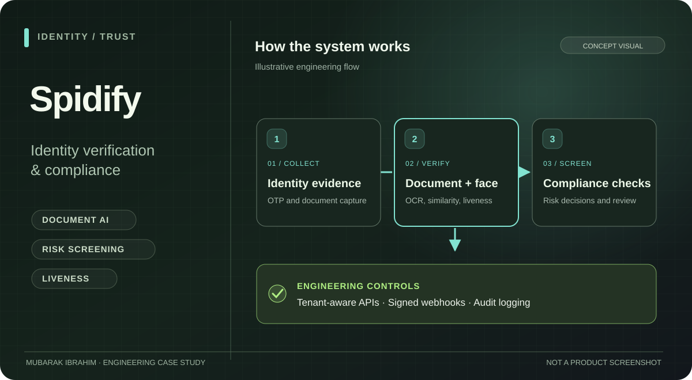

Spidify
Controlled verification stages with signed, retryable webhook delivery.

Explore the engineering workflow
Consent, OTP, and document stages establish the session context and gather evidence under explicit workflow states.
Workflow architecture · Backend & identity integrations
The constraint
Verification depends on external services and involves sensitive documents, asynchronous responses and interrupted sessions.
Decision: Explicit state transitions
A state machine governs OTP, documents, screening, selfie and liveness stages. Pydantic contracts and scoped permissions control actions.
Tradeoff
Explicit stages add orchestration work, but make permitted actions and recovery paths easier to reason about. Retries require idempotency to avoid duplicate side effects.
Implementation and controls
Implemented rate limiting, PII redaction, audit logging, HMAC-signed webhooks and retry/idempotency controls.
Evidence
The implementation is summarized here without publishing client source code or sensitive operational data. Quantitative results are not stated without measurement context.
Discuss this project
For engineering roles or project enquiries, contact mubastudio@gmail.com.